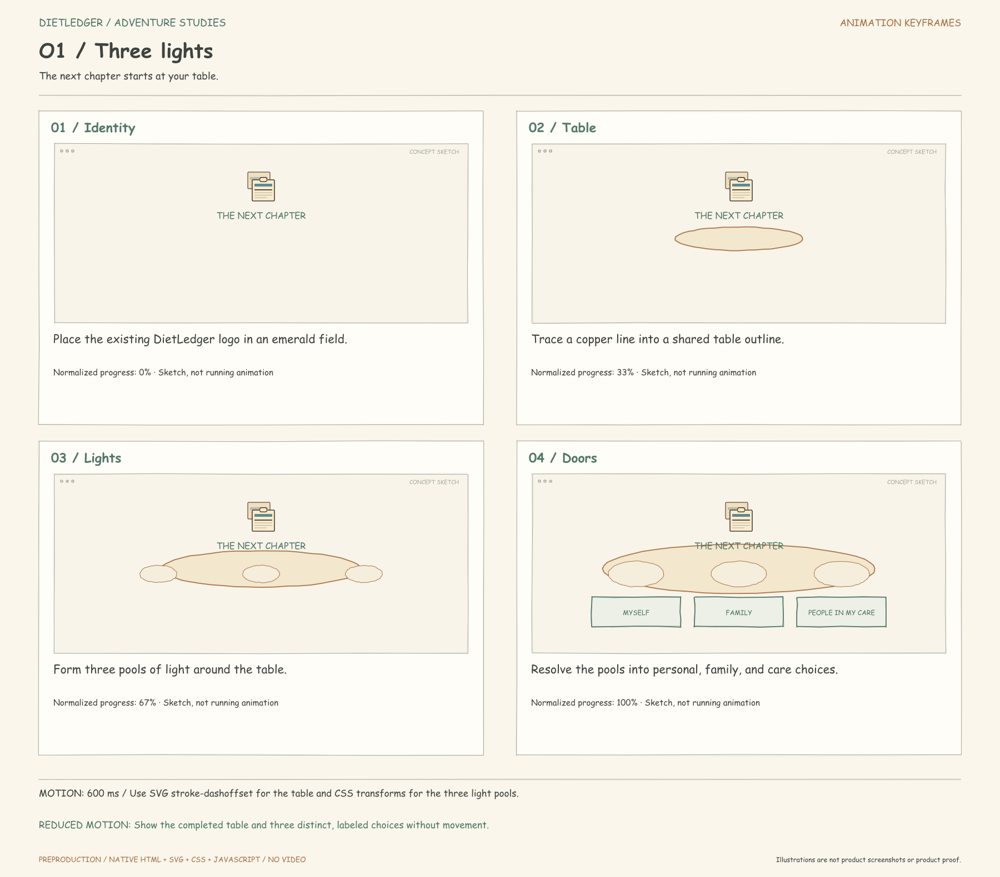

O1 / The invitation
The next chapter starts at your table.
Sketch the DietLedger logo above a copper-outlined table, with three warm pools of light suggesting personal, family, and care journeys.
Open animation storyboard: Three lights

Three lights
Full-size PNG · Editable SVGKeyframe sequence
- Identity: Place the existing DietLedger logo in an emerald field.
- Table: Trace a copper line into a shared table outline.
- Lights: Form three pools of light around the table.
- Doors: Resolve the pools into personal, family, and care choices.
Timing / trigger: 600 ms
Native technique: Use SVG stroke-dashoffset for the table and CSS transforms for the three light pools.
Reduced motion: Show the completed table and three distinct, labeled choices without movement.
Guardrail: Keep all choices and setup navigation immediately usable without collecting health details.
Demo reference: none
Exit / next: For myself · For my family · For people in my care